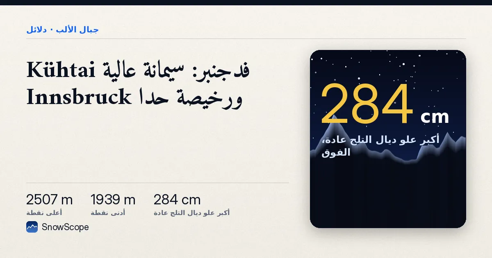

Kühtai فدجنبر: سيمانة عالية ورخيصة حدا Innsbruck
Kühtai تتمد أعلى من أعلى الممرات ديال محطات نمساوية بزاف، والعلو هاد يعطيك فائدة فديسمبر. القاعدة فـ 1939 م تحفظ التلج اللي الوديان تحتها تفقدوه: فـ 15 ديسمبر عادي السجل ديال SnowScope من 46 شتا يوريك 60 سم هنا، معاها 72 سم فالوسط و 112 سم فالقمة. الموسم الخفيف يمشي لحد 18 ديسمبر معاها تذكرة 6 أيام بـ EUR 269.
شوف توقعات التلج مباشرة ديال Kühtai فالتطبيق ديال SnowScopeالعلو ديال التلج، التنبيهات والخريطة 3D، فابور.
العلو كـ أمان
العلو ديال التلج يزيد كيفاش تطلع. Kühtai توريك هاد الحاجة ديالها براحة على 569 م من العمودي. فالقاعدة (1939 م) ديسمبر ديال النص عادة 60 سم، فالوسط (2223 م) 72 سم، وفالقمة (2507 م) 112 سم. هاد الفرق يعطيك خيارات كيفاش البيستات الدنيانية تنقص.
حتى فالشتوات الضعيفة، الجبل يحفظ التلج. فـ 1 شتا من 10، 15 ديسمبر يجي معاها غير 27 سم فالقاعدة. بس فـ 46 شتا ديال السجل، القاعدة ما جات خاوية يوم هاد. المنطقة المرسومة فيها 34 كم ديال البيستات و 13 ممر، وكل بيستة علي العلو.


متاع تحجز قبل الكريسماس
أول ديسمبر هي الرهان. فالقاعدة، 70% من الشتوات فيها 30 سم أو أكثر فالأسبوع الأول ديال ديسمبر، ترتفع لـ 85% فـ 8-14 ديسمبر. فالأسبوع الثالث (15-21 ديسمبر) توصل لـ 93%، و 96% فالأسبوع اللي قبل السنة الجديدة. الوسط أكثر أمان قبل بكري: بحال 89% فالأسبوع الأول.
اليوم الأول عادة ديال اللقاء 30 سم فالقاعدة هو 12 نونبر. لتحجز فديسمبر، ستنا لحد النص ديال الشهر باش تقلب الأرجحيات بقوة لصالحك، أو اقبل بـ التلج الضعيف إذا حجزت الأسبوع من 27 نونبر لـ 4 ديسمبر بـ السعر الخفيف.
الشتوات 15 اللي جاو ما قريبة
شنو اللي آخر 15 شتا قالوليك
Kühtai سخنت بقل من الوديان الدنيانية فالألب. المتوسط ديال ديسمبر فالقاعدة نقص شوية من 53 سم فأول 15 شتا لـ 49 سم فآخر 15 شتا. فالقمة، بقات ثابتة حوالي 103–104 سم. صورة أسبوع الكريسماس بدلات بقل: 100% من أول 15 شتا عندهم 30 سم فالقاعدة فأسبوع الكريسماس، بس 87% من آخر 15 شتا.
الشتا اللي فاتت (2025-26) كانت ضعيفة: 36 سم فالقاعدة فـ 15 ديسمبر. هنا، الضعيفة بحال تزال قابلة للتزلج. الاتجاه ديال الحاجات يوريك Kühtai بحال تبقى أكثر موثوقية من المحطات الدنيانية، بس ما في ديسمبر مضمون.
الفاتورة ديال الموسم الخفيف
حجز لحد 18 ديسمبر باش تقفل السعر الخفيف. تذكرة يوم واحد تكلف EUR 50.50 وتذكرة 6 أيام EUR 269. من 19 ديسمبر، الأسعار تطفر لـ EUR 66.50 فاليوم و EUR 353 لـ 6 أيام. الحفظ على تذكرة أسبوع كامل هو EUR 84.
من 4 ديسمبر والبعد، كيفاش تذكرة ديال 2 أيام أو أطول تخدم حتى على المنطقة Kühtai-Hochoetz، تضيف 90+ كم ديال البيستات المربوطة بـ لا إضافة. هاد الحاجة مهمة إذا الريح ساسة البيستات العليا ديال Kühtai.
Kühtai مقابل Stubaier Gletscher
Stubaier Gletscher، 20 دقيقة بعيدة قرب إنسبروك، تقف أعلى فالقمة (3208 م مقابل 2507 م) وتحفظ تلج بقل هنا: 169 سم فـ 15 ديسمبر عادي. القاعدة ديالها تنقص (1692 م) وأضعف، معاها غير 40 سم والتلج ما يجيش إلا 72% من أسابيع منتصف ديسمبر. 60 سم ديال Kühtai فالقاعدة هو أغلظ.
يوم واحد فالموسم الرئيسي فـ Stubaier Gletscher يكلف EUR 75.50 وتذكرة 6 أيام EUR 355. لأسبوع فديسمبر قبل 19 ديسمبر، EUR 269 ديال Kühtai لـ 6 أيام هو EUR 86 أرخص. ختار Stubaier إذا العلو الزيادة ديال الجليد والعمق تعجبك وما تاخمش تخلس زيادة. ختار Kühtai لـ تلج أفضل فالقاعدة وفاتورة أقل.
شنو تجهز وشنو تعرف
Kühtai هي قرية ممر عالية على طريق جبل. جيب إطارات شتوية وسلاسل ثلج؛ الطريق تقفل لـ التحكم بـ الانهيارات بعد التلج الكثيف. بني يوم احتياط فـ المخطط ديالك إذا عندك تاريخ خروج محدد.
المنطقة المرسومة ديال التزلج صغيرة وقابلة لـ التزلج كاملة فيومين أو ثلاثة من طرف متزلج متوسط. استعمل الربط ديال Hochoetz من 4 ديسمبر والبعد باش تكتشف بيستات جديدة بـ لا ثمن إضافي.
نصايح للي كيتزلجو
- حجز تذكرة 6 أيام ديالك لحد 18 ديسمبر باش تخلص EUR 269 بدل EUR 353 من 19 ديسمبر والبعد.
- قصد الأسبوع من 15-21 ديسمبر أو بعد: 93% من الشتوات عندهم 30 سم فالقاعدة فحينها، مقابل 85% فالأسبوع الثاني.
- روح لـ البيستات العليا كيفاش الريح تقوي؛ المنطقة المربوطة ديال Hochoetz (متاعة من 4 ديسمبر) تعطيك حماية على البيستات الطرية ديالها.
- جيب إطارات شتوية وسلاسل؛ الطريق لـ Kühtai تقفل باش الانهيارات ما تجي بعد الزرازم. شوف avalanche.report قبل تطلع من البيستة.
- فـ السنة الضعيفة، تزلج على الوسط والقمة أولا—القاعدة ممكن تخصها تلج جديدة يوم تغطي الحجار.
على هاد الأرقام
العلو ديال التلج فالمحطات هو أكثر تلج فالجهة الفوقانية فالتاريخ المكتوب؛ هادو تقديرات لمنطقة، ماشي قياس فنقطة وحدة. التوقعات يمكن تتبدل. ديما شوف النشرة الرسمية ديال الانهيارات قبل ما تخرج من البيست.
النشرات الرسمية ديال الانهيارات: Avalanche.report – Euregio Tyrol
كيفاش تستاشهد بهاد المقال
للبحث، التعليم ولا الصحافة: الأرقام والرسومات تقدر تعاود تخدم بيهم بحرية تحت CC BY 4.0 مع هاد الاستشهاد.
SnowScope (2026), Kühtai فدجنبر: سيمانة عالية ورخيصة حدا Innsbruck, https://snowscope.app/blog/ar/2026/11/kuehtai-december-ski-trip-highest-village-innsbruck-budget.html, تشاف ف 2026-11-14
SnowScope (Atlas Labs). (2026, November 14). Kühtai فدجنبر: سيمانة عالية ورخيصة حدا Innsbruck. SnowScope snow reports. https://snowscope.app/blog/ar/2026/11/kuehtai-december-ski-trip-highest-village-innsbruck-budget.html
BibTeX
@misc{snowscope2026kuehtaidecemberskitriphi,
author = {{SnowScope (Atlas Labs)}},
title = {Kühtai فدجنبر: سيمانة عالية ورخيصة حدا Innsbruck},
year = {2026},
month = nov,
howpublished = {\url{https://snowscope.app/blog/ar/2026/11/kuehtai-december-ski-trip-highest-village-innsbruck-budget.html}},
note = {Published 2026-11-14 13:29 UTC; accessed 2026-11-14}
}· CC BY 4.0 · الطريقة، الداتا والأدوات →
Kühtai: التلج والحرارة حسب العلو، هاد الشتا مقارنة مع اللي فاتت (الأدوات) →
تابع Kühtai
فابور: ميساج ملي يجي التلج، والتوقعات كل صباح.